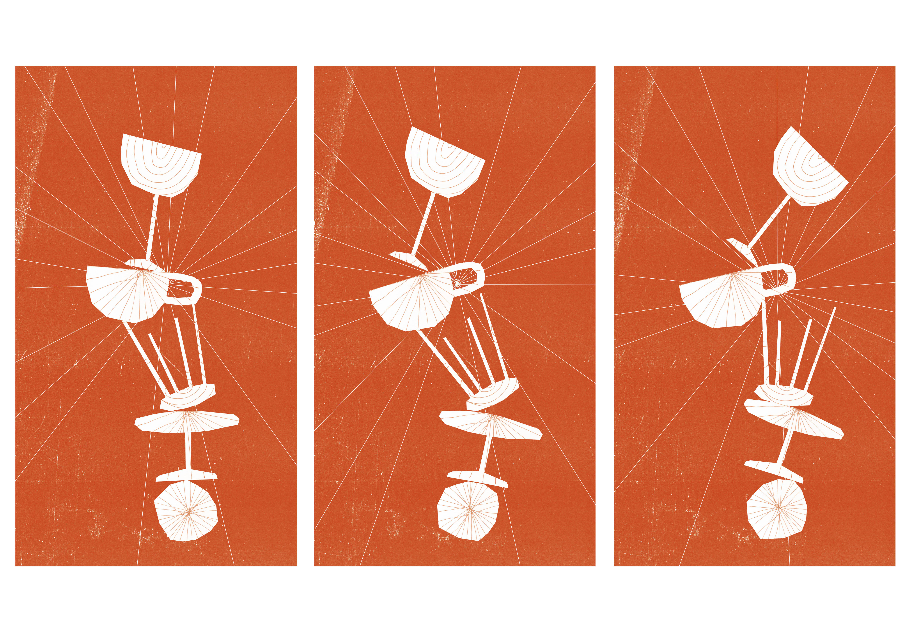
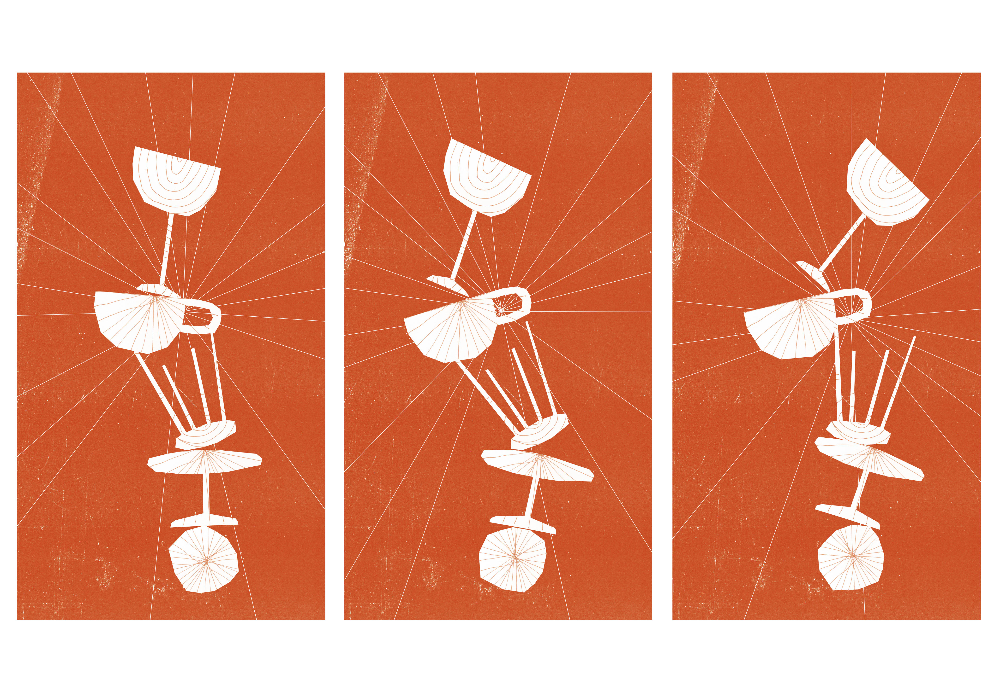

Puppet Nights Bar-bars
Conception de l'identité graphique de l'évènement des Puppet Nights bar-bars, programmation marionnettique gratuite dans les bars et cafés culturels de Toulouse, organisés par Marionnettissimo.
Affiche, programme et supports de communication numériques réalisés en février 2022


 
